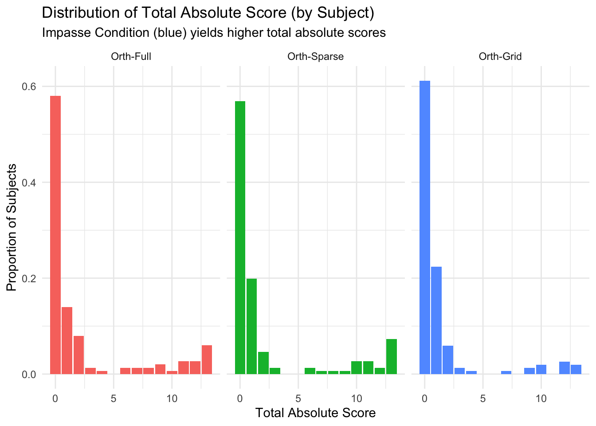
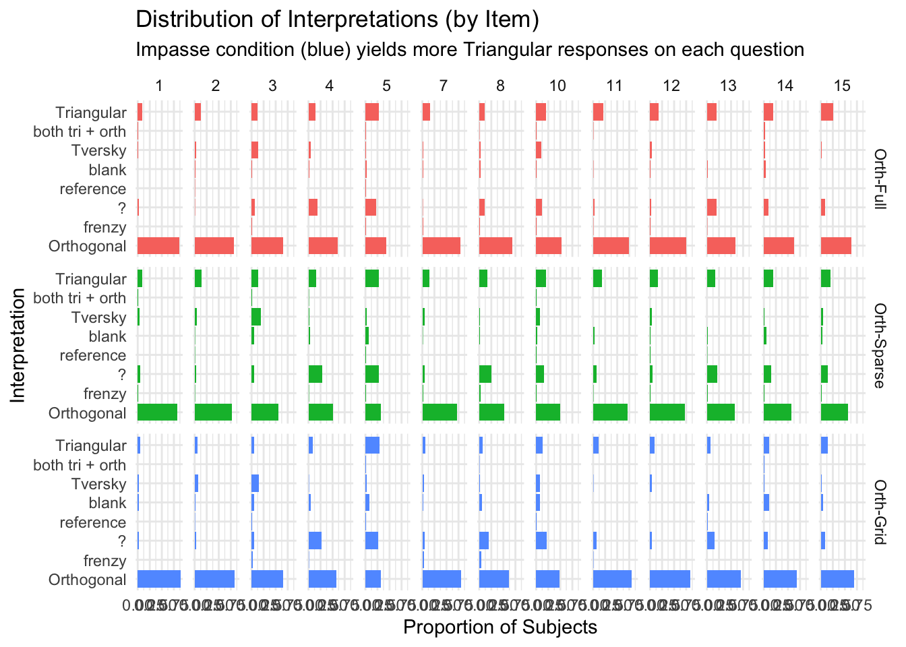
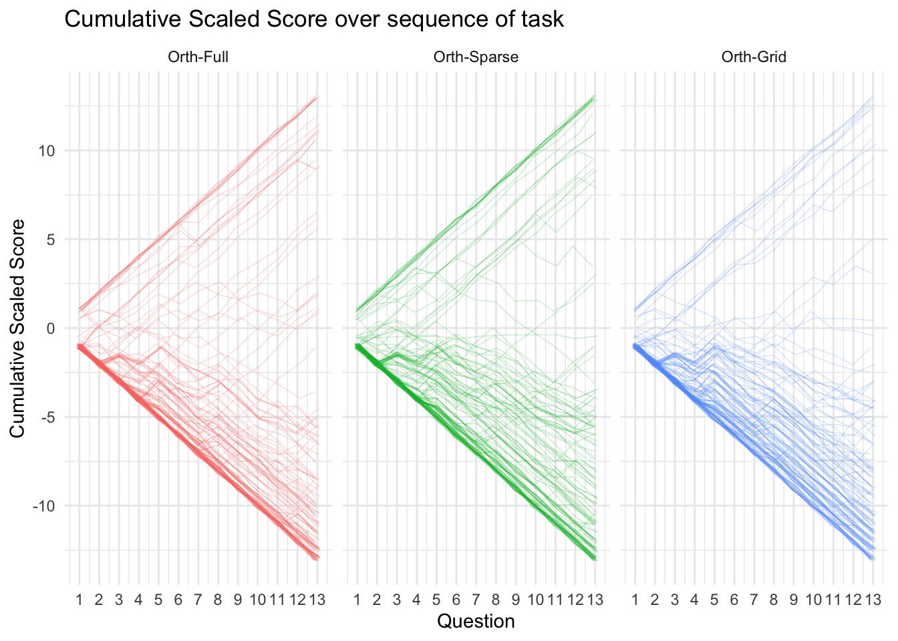
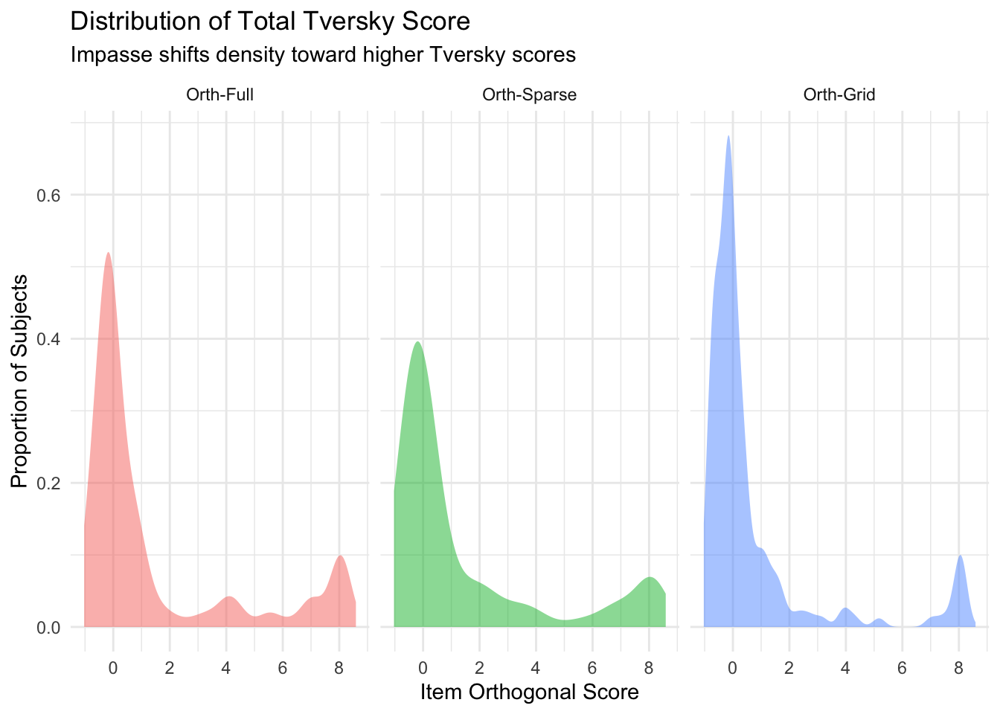
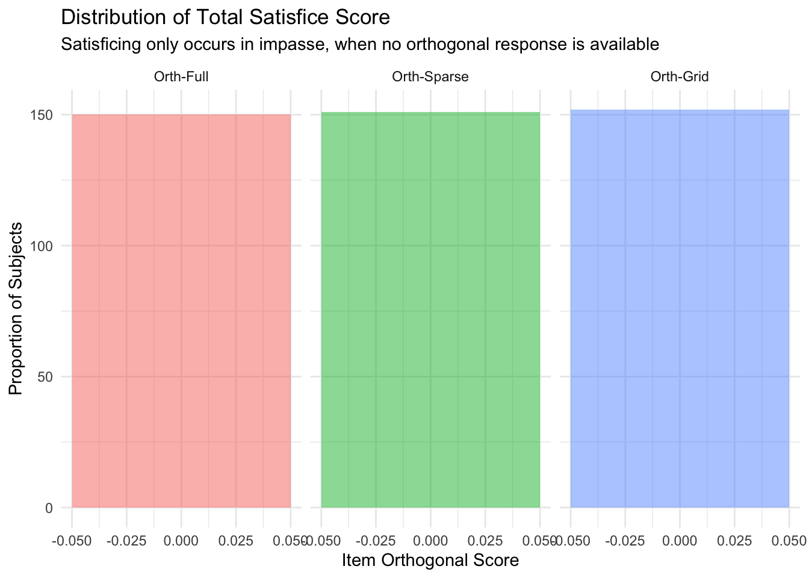

CODE
options(scipen=1, digits=3)
library(kableExtra) #printing tables
library(ggformula) #quick graphs
library(pbapply) #progress bar and time estimate for *apply fns
library(Hmisc) # %nin% operator
library(tidyverse) #ALL THE THINGSStudy SGC4A | 2 Response Scoring
The purpose of this notebook is to score (assign a measure of accuracy) to response data for the SGC4A study. This is required because the question type on the graph comprehension task used a ‘Multiple Response’ (MR) question design. Here, we evaluate different approaches to scoring multiple response questions, and transform raw item responses (e.g. boxes ABC are checked) to a measure of response accuracy. (Warning: this notebook takes several minutes to execute.) To review the strategy behind Multiple Response scoring for the SGC project, refer to section Section 3.
options(scipen=1, digits=3)
library(kableExtra) #printing tables
library(ggformula) #quick graphs
library(pbapply) #progress bar and time estimate for *apply fns
library(Hmisc) # %nin% operator
library(tidyverse) #ALL THE THINGSTo review the strategy behind Multiple Response scoring for the SGC project, refer to section Section 3.
In SGC we are fundamentally interested in understanding how a participant interprets the presented graph (stimulus). The graph comprehension task asks them to select the data points in the graph that meet the criteria posed in the question. To assess a participant’s performance, for each question (q=15) we will calculate the following scores:
An overall, strict score:
1. Absolute Score : using dichotomous scoring referencing true (Triangular) answer. (see 1.2)
Sub-scores, for each alternative graph interpretation
2. Triangular Score : using partial scoring [-1/q, +1/p] referencing true (Triangular) answer key.
3. Orthogonal Score : using partial scoring [-1/q, +1/p] referencing (incorrect Orthogonal) answer key.
Based on prior observational studies where we observed emergence of other alternative interpretations (i.e. transitional interpretations) we also calculate subscores for these alternatives.
4. Tversky Score : using partial scoring [-1/q, +1/p] referencing (incorrect connecting-lines strategy) answer key. 5. Satisficing Score : using partial scoring [-1/q, +1/p] referencing (incorrect satisficing strategy) answer key.
We start by importing three answer keys: (1) Q1 - Q5 [control condition], (2) Q1-Q5 [impasse condition], (3) Q6-15. Separate answer keys by condition are required for Q1-Q5 because the stimuli for each condition visualize a different underlying dataset (i.e. the graphs show datapoints in different positions). Q6-Q15 are identical across conditions. Each answer key includes a row for each question, and a column defining the subset of response options that correspond to different graph interpretations.
# #HACK WD FOR LOCAL RUNNING?
# imac = "/Users/amyraefox/Code/SGC-Scaffolding_Graph_Comprehension/SGC-X/ANALYSIS/MAIN"
# setwd(imac)
#SAVE KEYS FOR FUTURE USE
keys_raw <- read_csv("analysis/utils/keys/parsed_keys/keys_raw")
keys_orth <- read_csv("analysis/utils/keys/parsed_keys/keys_orth")
keys_tri <- read_csv("analysis/utils/keys/parsed_keys/keys_tri")
keys_satisfice_left <- read_csv("analysis/utils/keys/parsed_keys/keys_satisfice_left")
keys_satisfice_right <- read_csv("analysis/utils/keys/parsed_keys/keys_satisfice_right")
keys_tversky_duration <- read_csv("analysis/utils/keys/parsed_keys/keys_tversky_duration")
keys_tversky_end <- read_csv("analysis/utils/keys/parsed_keys/keys_tversky_end")
keys_tversky_max <- read_csv("analysis/utils/keys/parsed_keys/keys_tversky_max")
keys_tversky_start <- read_csv("analysis/utils/keys/parsed_keys/keys_tversky_start")Next, we import the item-level response data. For each row in the item level dataset (indicating the response to a single question-item for a single subject), we compare the raw response df_items$response with the answer keys in each interpretation (e.g. keys_orth, keys_tri, etc…), then using those sets, determine the number of correctly selected items(p) and incorrectly selected items (q), which in turn are used to calculate partial[-1/q, +1/p] scores for each interpretation. The resulting scores are then stored on each item in df_items, and can be used to determine which graph interpretation the subject held.
Specifically, the following scores are calculated for each item:
Interpretation Subscores
score_TRI How consistent is the response with the triangularinterpretation?score_ORTH How consistent is the response with the orthogonalinterpretation?score_SATISFICE is calculated by taking the maximum value of :
score_SAT_left How consistent is the response with the (left side) Satisficing interpretation?score_SAT_right How consistent is the response with the (right side) Satisficing interpretationscore_TVERSKY is calculated by taking the maximum value of:
score_TV_max How consistent is the response with the (maximal) Tversky interpretation?score_TV_start How consistent is the response with the (start-time) Tversky interpretation?score_TV_end How consistent is the response with the (end-time) Tversky interpretation?score_TV_duration How consistent is the response with the (duration) Tversky interpretation?score_REF Did the response select only the reference point?score_BOTH How consistent is the response with both the orthogonal and triangular interpretations?Absolute Scores
score_ABS Is the response strictly correct? (triangular interpretation)score_niceABS Is the response strictly correct? (triangular interpretation, not penalizing ref points). This is a more generous version of the Absolute score that does not penalize the participant if in addition to the correct answer in addition to they also select the data point referenced in the question.#HACK WD FOR LOCAL RUNNING?
# imac = "/Users/amyraefox/Code/SGC-Scaffolding_Graph_Comprehension/SGC-X/ANALYSIS/MAIN"
# setwd(imac)
#backup <- read_rds('analysis/SGC4A/data/1-study-level/sgc4a_items.rds') #for troubleshooting only
df_items <- read_rds('analysis/SGC4A/data/1-study-level/sgc4a_items.rds')# #HACK WD FOR LOCAL RUNNING?
# imac = "/Users/amyraefox/Code/SGC-Scaffolding_Graph_Comprehension/SGC-X/ANALYSIS/MAIN"
# setwd(imac)
source("analysis/utils/scoring.R")note: this cell takes approximately 30 minutes to run on the full df_items dataframe with 4950 records
#RUN THIS <OR> THE CALCULATE-SCORES-FORLOOP [not both]
#ALPHEBETIZE RESPONSE
df_items$response = pbmapply(reorder_inplace, df_items$response)
#STRATEGY PARTIAL-SUBSCORES
df_items$score_TRI = pbmapply(calc_subscore, df_items$q, df_items$condition, df_items$response, MoreArgs = list(keyframe = keys_tri))
df_items$score_ORTH = pbmapply(calc_subscore, df_items$q, df_items$condition, df_items$response, MoreArgs = list(keyframe = keys_orth))
df_items$score_SAT_left = pbmapply(calc_subscore, df_items$q, df_items$condition, df_items$response, MoreArgs = list(keyframe = keys_satisfice_left))
df_items$score_SAT_right = pbmapply(calc_subscore, df_items$q, df_items$condition, df_items$response, MoreArgs = list(keyframe = keys_satisfice_right))
df_items$score_TV_max = pbmapply(calc_subscore, df_items$q, df_items$condition, df_items$response, MoreArgs = list(keyframe = keys_tversky_max))
df_items$score_TV_start = pbmapply(calc_subscore, df_items$q, df_items$condition, df_items$response, MoreArgs = list(keyframe = keys_tversky_start))
df_items$score_TV_end = pbmapply(calc_subscore, df_items$q, df_items$condition, df_items$response, MoreArgs = list(keyframe = keys_tversky_end))
df_items$score_TV_duration = pbmapply(calc_subscore, df_items$q, df_items$condition, df_items$response, MoreArgs = list(keyframe = keys_tversky_duration))
#SPECIAL ABSOLUTE SUBSCORES
df_items$score_REF = pbmapply(calc_refscore, df_items$q, df_items$response)
df_items$score_BOTH = as.integer((df_items$score_TRI == 1) & (df_items$score_ORTH ==1))
#ABSOLUTE SCORES
df_items$score_ABS = as.integer(df_items$correct)
df_items$score_niceABS <- as.integer((df_items$score_TRI == 1)) #tri doesn't penalize ref or ve-areaFinally, we use the interpretation subscores to classify the response as a particular interpretation. This classification algorithm : (1) First decides if the response matches one or more ‘special’ situations (blank response, reference point response, both ORTH and TRI) (2) If response doesn’t match a special situation, it compares the individual subscores, and subscores and decides if they are discriminant (i.e. are the scores different enough to make a prediction). A discriminant threshold of 0.5pts (on a scale from -1 to +1 is used) (2) If the variance in subscores surpasses the threshold, the interpretation is classified based on the highest subscore (TRIANGULAR, ORTHOGONAL, TVERSKY, SATISFICE) (3) If the variance does not surpass the threshold, the interpretation is labelled as “?”, indicating it cannot be classified, and is of an unknown interpretation.
The final output is called interpretation.
#stoopid extra copying for troubleshooting safety
temp <- df_items
temp <- derive_interpretation(temp)
df_items <- temp The interpretation response variable gives us the finest grain indication of the reader’s understanding of the graph for a particular question. However, it is a categorical variable, which poses a challenge for analyzing cumulative performance at the subject level. To address this challenge, we derive a scaled_score that converts each possible interpretation to a numeric value on a scale from -1 to +1. This scaling takes advantage of the observation that each interpretation can be positioned along a spectrum of understanding from completely incorrect (orthogonal) to completely correct (triangular). Alternative interpretations lay somewhere between.
Specifically, we assign the following values to each interpretation:
df_items$score_SCALED <- calc_scaled(df_items$interpretation)The scaled score represents a 5-category ordering of understanding. We also derive a 3-category ordering that gives higher grained access to “orthogonal-like” vs “uncertain” vs “triangle-like” responses.
Specifically, we assign the following values to each interpretation:
df_items <- df_items %>% mutate (
score_STATE = recode_factor(df_items$score_SCALED,
"-1" = "orth-like",
"-0.5" = "unknown",
"0" = "unknown",
"0.5" = "tri-like",
"1" = "tri-like"),
score_STATE = as.ordered(score_STATE))Next, we summarize the item level scores by subject in order to calculate cummulative subscores to be stored on the subject record.
# #HACK WD FOR LOCAL RUNNING?
# imac = "/Users/amyraefox/Code/SGC-Scaffolding_Graph_Comprehension/SGC-X/ANALYSIS/MAIN"
# setwd(imac)
#import subjects
df_subjects <- read_rds('analysis/SGC4A/data/1-study-level/sgc4a_participants.rds') %>% mutate(subject = as.character(subject)) %>% arrange(subject)
#make temporary copies for testing safety
s = df_subjects
i = df_items
#summarize
test_subs <- summarise_bySubject(s,i)`summarise()` has grouped output by 'subject'. You can override using the
`.groups` argument.Warning in subjects_summary$subject == subjects$subject: longer object length is
not a multiple of shorter object length[1] TRUE FALSE
[1] TRUE
[1] TRUE
[1] TRUE
[1] TRUE
[1] TRUE
[1] TRUEdf_subjects <- test_subsWe also summarize absolute and scaled score progress at each question in the task, to explore cumulative performance over the task.
#GET ABSOLUTE PROGRESS
df_absolute_progress <- progress_Absolute(df_items)
#GET SCALED PROGRESS
df_scaled_progress <- progress_Scaled(df_items)options(repr.plot.width =9, repr.plot.height =12)
#create temp data frame for visualizations
df = df_items %>% filter (q %nin% c(6,9)) %>% mutate(
score_niceABS = as.factor(score_niceABS),
pretty_condition = as.factor(condition),
pretty_interpretation = factor(interpretation,
levels = c("Orthogonal", "Satisfice",
"frenzy","?",
"reference","blank",
"Tversky", "both tri + orth",
"Triangular" ))
)#DISTRIBUTION ABSOLUTE SCORE FULL TASK
gf_props(~score_niceABS, fill = ~pretty_condition, position = position_dodge(), data = df) +
labs( x = "Absolute Score",
title = "Distribution of Absolute Score (all Items)",
subtitle = paste(""),
y = "Proportion of Items") +
scale_fill_discrete(name = "Condition") +
theme_minimal()
#DISTRIBUTION ABSOLUTE SCORE BY ITEM
gf_props(~score_niceABS, fill = ~pretty_condition, position = position_dodge(), data = df) %>%
gf_facet_grid(pretty_condition~q) +
labs( x = "Absolute Score",
title = "Distribution of Absolute Score (by Item)",
subtitle = "",
y = "Proprition of Subjects") +
scale_fill_discrete(name = "Condition") +
theme_minimal()
#DISTRIBUTION ABSOLUTE SCORE BY SUBJECT
gf_props(~s_NABS, fill = ~pretty_condition, position = position_dodge(), data = df_subjects) %>%
gf_facet_grid(pretty_condition ~. )+
labs( x = "Total Absolute Score",
title = "Distribution of Total Absolute Score (by Subject)",
subtitle = "",
y = "Proportion of Subjects") +
scale_fill_discrete(name = "Condition") +
theme_minimal() + theme(legend.position = "blank")
options(repr.plot.width =9, repr.plot.height =12)
#DISTRIBUTION SCALED SCORE FULL TASK
gf_props(~score_SCALED, fill = ~pretty_condition, position = position_dodge(), data = df) +
labs( x = "Scaled Score",
title = "Distribution of Scaled Score (all Items)",
subtitle = "",
y = "Proportion of Items") +
scale_fill_discrete(name = "Condition") +
theme_minimal()#DISTRIBUTION SCALED SCORE BY ITEM
gf_props(~score_SCALED, fill = ~pretty_condition, position = position_dodge(), data = df) %>%
gf_facet_grid(q~pretty_condition) +
labs( x = "Scaled Score",
title = "Distribution of Scaled Score (by Item)",
subtitle = "",
y = "Proportion of Subjects") +
scale_fill_discrete(name = "Condition") + scale_y_continuous(breaks=c(0,0.5)) +
theme_minimal() + theme(legend.position="blank")
#DISTRIBUTION SCALED SCORE BY SUBJECT
gf_props(~s_SCALED, fill = ~pretty_condition, data = df_subjects) %>%
gf_facet_grid(pretty_condition ~. )+
labs( x = "Total Scaled Score",
title = "Distribution of Total Scaled Score (by Subject)",
subtitle = "",
y = "Number of Subjects") +
scale_fill_discrete(name = "Condition") +
theme_minimal()
#DISTRIBUTION OF INTERPRETATION
gf_props(~pretty_interpretation, fill = ~pretty_condition, data = df) %>%
gf_facet_grid( pretty_condition ~ ., labeller = label_both) +
labs( title = "Distribution of Interpretations (across Task)",
x = "Graph Interpretation",
y = "Proportion of Responses",
subtitle = "") +
theme_minimal() + theme(legend.position = "blank")
#DISTRIBUTION OF INTERPRETATION ACROSS ITEMS
gf_propsh(~ pretty_interpretation, fill = ~pretty_condition, data = df) %>%
gf_facet_grid( pretty_condition~q) +
labs( title = "Distribution of Interpretations (by Item)",
subtitle = "",
y = "Interpretation", x = "Proportion of Subjects") + theme_minimal() + theme(legend.position = "blank")
#DISTRIBUTION OF INTERPRETATION TYPE ACROSS ITEMS
gf_propsh(~ high_interpretation, fill = ~pretty_condition, data = df) %>%
gf_facet_grid( pretty_condition~q) +
labs( title = "Distribution of Interpretations (by Item)",
subtitle = "",
y = "Interpretation", x = "Proportion of Subjects") + theme_minimal() + theme(legend.position = "blank")
#VISUALIZE progress over time ABSOLUTE score
ggplot(data = df_absolute_progress, aes(x = question, y = score, group = subject, alpha = 0.01, color = pretty_condition)) +
geom_line(position=position_jitter(w=0.15, h=0.05), size=0.1) +
facet_wrap(~pretty_condition) +
labs (title = "Cumulative Absolute Score over sequence of task", x = "Question" , y = "Cumulative Absolute Score") +
scale_x_continuous(breaks = c(1,2,3,4,5,6,7,8,9,10,11,12,13)) +
theme_minimal() + theme(legend.position = "blank")
#VISUALIZE progress over time SCALED score
ggplot(data = df_scaled_progress, aes(x = question, y = score, group = subject, alpha = 0.01, color = pretty_condition)) +
geom_line(position=position_jitter(w=0.15, h=0.05), size=0.1) +
facet_wrap(~pretty_condition) +
labs (title = "Cumulative Scaled Score over sequence of task", x = "Question" , y = "Cumulative Scaled Score") +
scale_x_continuous(breaks = c(1,2,3,4,5,6,7,8,9,10,11,12,13)) +
theme_minimal() + theme(legend.position = "blank")
gf_density(~ s_TRI, fill = ~pretty_condition, data = df_subjects) %>%
gf_facet_wrap( ~ pretty_condition) +
labs( title = "Distribution of Total Triangular Score",
subtitle = "Impasse shifts density toward higher Triagular scores",
x = "Item Triangular Score", y = "Proportion of Subjects") +
theme_minimal() + theme(legend.position = "blank")
gf_density(~ s_ORTH, fill = ~pretty_condition, data = df_subjects) %>%
gf_facet_wrap( ~ pretty_condition) +
labs( title = "Distribution of Total Orthogonal Score",
subtitle = "Impasse shifts density toward lower Orthogonal scores",
x = "Item Orthogonal Score", y = "Proportion of Subjects") +
theme_minimal() + theme(legend.position = "blank")
gf_density(~ s_TVERSKY, fill = ~pretty_condition, data = df_subjects) %>%
gf_facet_wrap( ~ pretty_condition) +
labs( title = "Distribution of Total Tversky Score",
subtitle = "Impasse shifts density toward higher Tversky scores",
x = "Item Orthogonal Score", y = "Proportion of Subjects") +
theme_minimal() + theme(legend.position = "blank")
gf_histogram(~ s_SATISFICE, fill = ~pretty_condition, data = df_subjects) %>%
gf_facet_wrap( ~ pretty_condition) +
labs( title = "Distribution of Total Satisfice Score",
subtitle = "Satisficing only occurs in impasse, when no orthogonal response is available",
x = "Item Orthogonal Score", y = "Proportion of Subjects") +
theme_minimal() + theme(legend.position = "blank")
library(performance)
library(report)
# m1 <- lm(s_SCALED ~ pretty_condition, data = df_subjects)
# summary(m1)
# anova(m1)
# report(m1)Finally, we export the scores for each item (df_items) and summarized over subjects (df_subjects), as well as cumulative progress dataframes (df_absolute_progress, df_scaled_progress)
# #HACK WD FOR LOCAL RUNNING?
# imac = "/Users/amyraefox/Code/SGC-Scaffolding_Graph_Comprehension/SGC-X/ANALYSIS/MAIN"
# # # mbp = "/Users/amyfox/Sites/RESEARCH/SGC—Scaffolding Graph Comprehension/SGC-X/ANALYSIS/MAIN"
# setwd(imac)
#SAVE FILES
write.csv(df_subjects,"analysis/SGC4A/data/2-scored-data/sgc4a_scored_participants.csv", row.names = FALSE)
write.csv(df_items,"analysis/SGC4A/data/2-scored-data/sgc4a_scored_items.csv", row.names = FALSE)
write.csv(df_absolute_progress,"analysis/SGC4A/data/2-scored-data/sgc4a_absolute_progress.csv", row.names = FALSE)
write.csv(df_scaled_progress,"analysis/SGC4A/data/2-scored-data/sgc4a_scaled_progress.csv", row.names = FALSE)
#SAVE R Data Structures
#export R DATA STRUCTURES (include codebook metadata)
rio::export(df_subjects, "analysis/SGC4A/data/2-scored-data/sgc4a_scored_participants.rds") # to R data structure file
rio::export(df_items, "analysis/SGC4A/data/2-scored-data/sgc4a_scored_items.rds") # to R data structure filesessionInfo()R version 4.2.1 (2022-06-23)
Platform: x86_64-apple-darwin17.0 (64-bit)
Running under: macOS Big Sur ... 10.16
Matrix products: default
BLAS: /Library/Frameworks/R.framework/Versions/4.2/Resources/lib/libRblas.0.dylib
LAPACK: /Library/Frameworks/R.framework/Versions/4.2/Resources/lib/libRlapack.dylib
locale:
[1] en_US.UTF-8/en_US.UTF-8/en_US.UTF-8/C/en_US.UTF-8/en_US.UTF-8
attached base packages:
[1] stats graphics grDevices utils datasets methods base
other attached packages:
[1] report_0.5.1 performance_0.9.1 forcats_0.5.1 stringr_1.4.0
[5] dplyr_1.0.9 purrr_0.3.4 readr_2.1.2 tidyr_1.2.0
[9] tibble_3.1.7 tidyverse_1.3.1 Hmisc_4.7-0 Formula_1.2-4
[13] survival_3.3-1 lattice_0.20-45 pbapply_1.5-0 ggformula_0.10.1
[17] ggridges_0.5.3 scales_1.2.0 ggstance_0.3.5 ggplot2_3.3.6
[21] kableExtra_1.3.4
loaded via a namespace (and not attached):
[1] fs_1.5.2 bit64_4.0.5 lubridate_1.8.0
[4] insight_0.18.0 webshot_0.5.3 RColorBrewer_1.1-3
[7] httr_1.4.3 tools_4.2.1 backports_1.4.1
[10] utf8_1.2.2 R6_2.5.1 rpart_4.1.16
[13] DBI_1.1.3 colorspace_2.0-3 nnet_7.3-17
[16] withr_2.5.0 tidyselect_1.1.2 gridExtra_2.3
[19] curl_4.3.2 bit_4.0.4 compiler_4.2.1
[22] cli_3.3.0 rvest_1.0.2 htmlTable_2.4.0
[25] xml2_1.3.3 labeling_0.4.2 mosaicCore_0.9.0
[28] checkmate_2.1.0 systemfonts_1.0.4 digest_0.6.29
[31] foreign_0.8-82 rmarkdown_2.14 svglite_2.1.0
[34] rio_0.5.29 base64enc_0.1-3 jpeg_0.1-9
[37] pkgconfig_2.0.3 htmltools_0.5.2 labelled_2.9.1
[40] dbplyr_2.2.1 fastmap_1.1.0 readxl_1.4.0
[43] htmlwidgets_1.5.4 rlang_1.0.3 rstudioapi_0.13
[46] farver_2.1.0 generics_0.1.2 jsonlite_1.8.0
[49] vroom_1.5.7 zip_2.2.0 magrittr_2.0.3
[52] Matrix_1.4-1 Rcpp_1.0.8.3 munsell_0.5.0
[55] fansi_1.0.3 lifecycle_1.0.1 stringi_1.7.6
[58] yaml_2.3.5 MASS_7.3-57 plyr_1.8.7
[61] grid_4.2.1 parallel_4.2.1 crayon_1.5.1
[64] haven_2.5.0 splines_4.2.1 hms_1.1.1
[67] knitr_1.39 pillar_1.7.0 reprex_2.0.1
[70] glue_1.6.2 evaluate_0.15 latticeExtra_0.6-29
[73] data.table_1.14.2 modelr_0.1.8 tzdb_0.3.0
[76] png_0.1-7 vctrs_0.4.1 tweenr_1.0.2
[79] cellranger_1.1.0 gtable_0.3.0 polyclip_1.10-0
[82] datawizard_0.4.1 assertthat_0.2.1 openxlsx_4.2.5
[85] xfun_0.31 ggforce_0.3.3 broom_0.8.0
[88] viridisLite_0.4.0 cluster_2.1.3 ellipsis_0.3.2